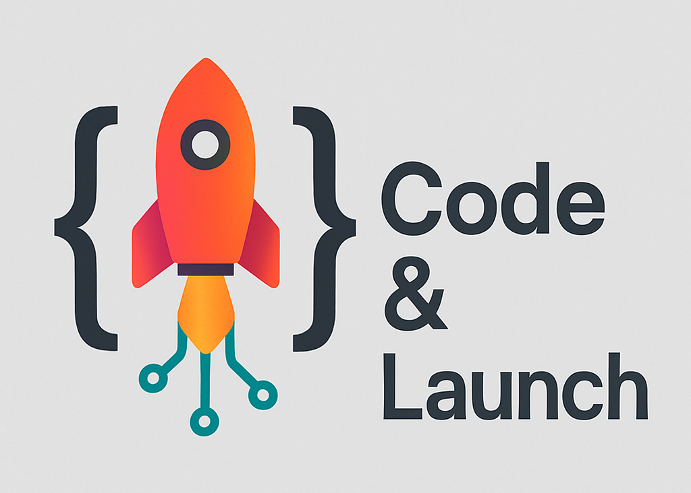

Creating Apps

After the last session of my class in the spring, a student came up to me and said “I want to thank you. I never knew anything about programming, and now I can create apps. It’s amazing!” We have a few years, I think, when we can be the first to show students the power of AI + coding and have these rewarding moments. But soon everyone will know, and I’m not sure what we’ll do then. Maybe AI will teach our courses.
A significant upside to app creation is that it makes the code permanent. Using AI + python to do a task repeatedly runs into the issue that there is some randomness in LLM code generation. The code will not be exactly the same each time. Given that it is important to verify that the code is correct (for example, by running it on small examples), this poses a problem. Putting working code in an app avoids this problem. It also makes the process of using the code simpler - there is no need to write a prompt each time.
Another important feature of app creation is that it enables us to ensure data privacy. By creating an app that is run locally, we can avoid ever exposing our data. We can use a small artificial dataset when creating the app, and then we can run the app on the real data on our own computer, even if it is disconnected from the internet.
The streamlit, gradio, and dash libraries allow us to create web apps using only python code. The libraries provide python wrappers around HTML, CSS, and JavaScript. AI allows us to create web apps using those libraries just by prompting, because LLMs know the streamlit, gradio, and dash syntax. There are other tools (like Replit) that directly take user prompts and write HTML, CSS, and JavaScript as well as python. I show students Replit but stick primarily with Julius and streamlit or gradio.
I got some experience in creating apps when my colleague Kevin Crotty and I built an interactive app to illustrate financial concepts: Learn Investments @ Rice Business. It wasn’t long after finishing it that I realized that pretty much everything we had painstakingly constructed (with the great help of the dash and plotly libraries) could be generated by AI + coding with very little effort. Oh, well. At least I still have my day job.
To illustrate app creation for students, I return to the cost of equity calculation and ask Julius to create a streamlit (or gradio, which is very similar) app that allows the user to input a ticker, computes the cost of equity as before, and creates and downloads the PowerPoint deck as before.
Creating this app is a multi-step process. As discussed in a previous post, a safe way to do this is to ask for a python function to be created at each step and saved as a .py file. For example, (i) a function that takes a user-supplied ticker, estimates the beta and returns the beta and a regression plot, (ii) a function that takes a beta and returns a dictionary with the risk-free rate, beta, market risk premium, and cost of equity as the keys and the calculated values as the values, and (iii) a function that takes the regression plot and dictionary as inputs and returns a PowerPoint deck. As step (iv), we can ask Julius to put these together to create an app that allows the user to input a ticker and downloads the PowerPoint deck.
Unfortunately, as of this writing, Julius cannot directly run the streamlit app. It is necessary to ask for an app.py file, download the app.py file, and run it on your own computer. To do this, you need python installed on your computer. I’m hopeful that the Julius developers will soon make this simpler. In the meantime, you can ask Julius how to install python, and you can ask Julius how to run the app on your own computer. I spend time in class walking students through the process (I also recorded some videos explaining the process, but I’m doubtful anyone ever looked at them!).
Once the app is running on your computer, there is an option to deploy it in the cloud. The easiest options are the free Streamlit Community Cloud for streamlit and the free Hugging Face Spaces for gradio. However, this also takes a couple of steps (for example, creating a github repo), so I’ve done the deployment for students myself when they want it. Several students wanted to deploy their course projects to show to prospective employers. Free deployment on either Streamlit or Hugging Face has the downside that the app is “put to sleep” after a couple of days of inactivity and has to be manually restarted. For permanent deployment, I deploy to Koyeb though there are other similar services. Here is the cost of equity app on Koyeb, the github repo it was deployed from, and the Julius thread that created it.
Cloud deployment is often unnecessary. If someone creates an app to automate a task, they do not need to deploy it in the cloud. They can simply run it on their own computer each time they need to perform the task.
Creating apps is not the first thing I would do in a course, because running an app either locally or in the cloud does take a few extra steps. But, I think it is an important thing to show students at some point. Post in the comments below to let us know how it goes if you try it or to let us know if this post omits some good app-creation options.
Also on substack at kerryback.substack.com